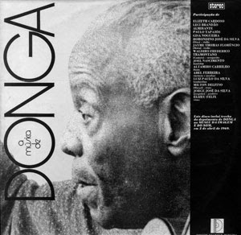

Samba
As primeiras manifestações que dariam origem ao samba datam do século XVI com negros de Angola e do Congo que chegaram no Brasil como escravos. Eles trouxeram a semente daquele que viria a se tornar um dos mais importantes ritmos do nosso país.Um dos antecessores mais importantes do samba foi o lundu, que era feito nas senzalas. As senzalas eram os alojamentos onde os escravos viviam durante o período da escravatura. O ritmo era dado pela batida com os pés e com as mãos no chão ou no próprio corpo porque não havia tambor ou qualquer outro instrumento musical disponível.
Foi em 1916 que o então compositor Donga registrou pela primeira vez na Biblioteca Nacional um samba chamado de "Pelo Telefone"

Pelo Telefone - Donga